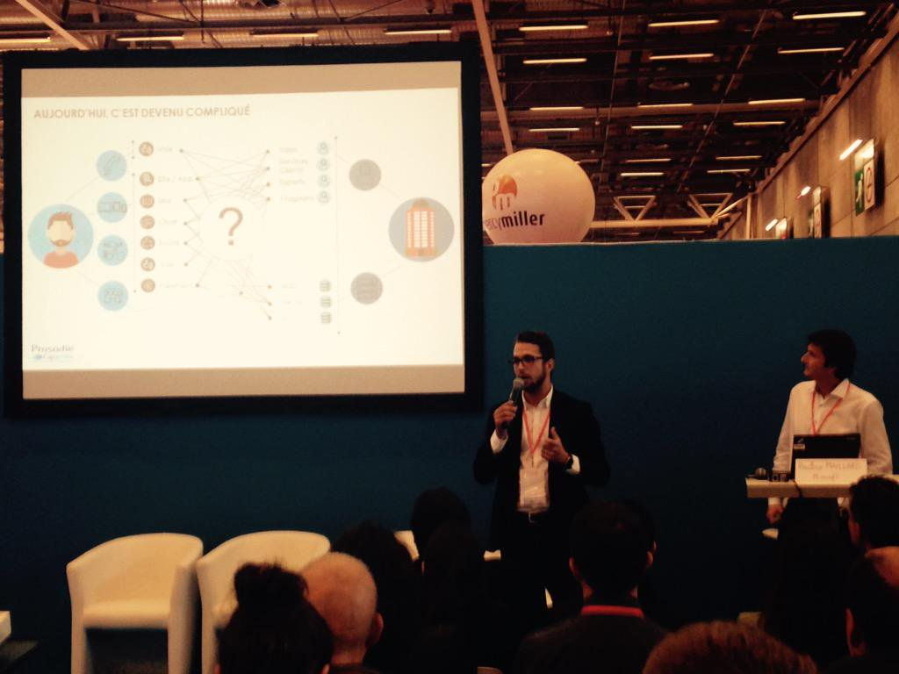
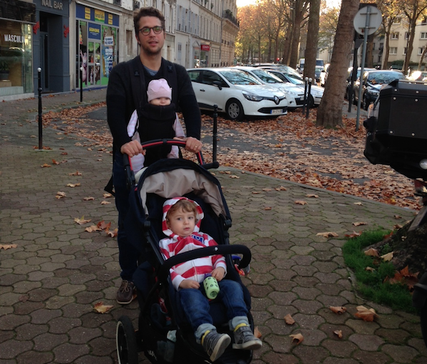

Speaker

CRM Festival in Paris
Salesforce, Microsoft Dynamics, Oracle RightNow, Hybris, Zendesk: traditional and digital channels integration, functional and UX approach.
Dad

Father of Two Kittens
"Le Choix du Roi" like the French say. My boy speaks three toddler languages: Spanish, English, French! Baby girl is just adorable.